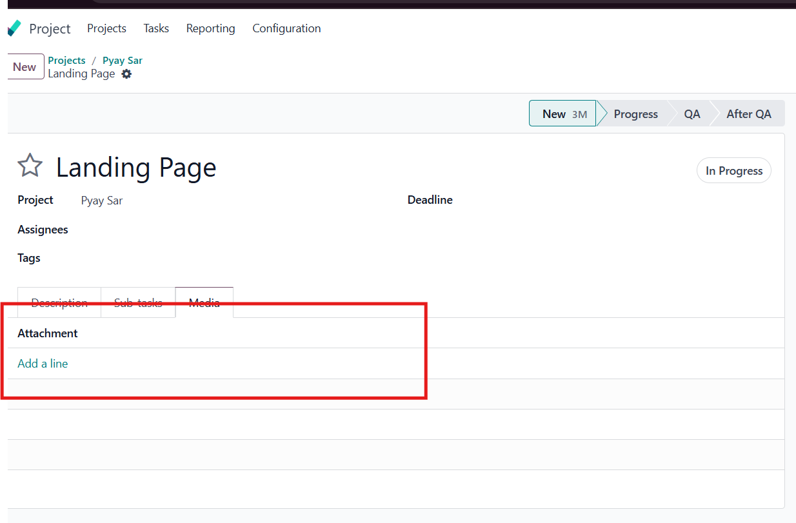
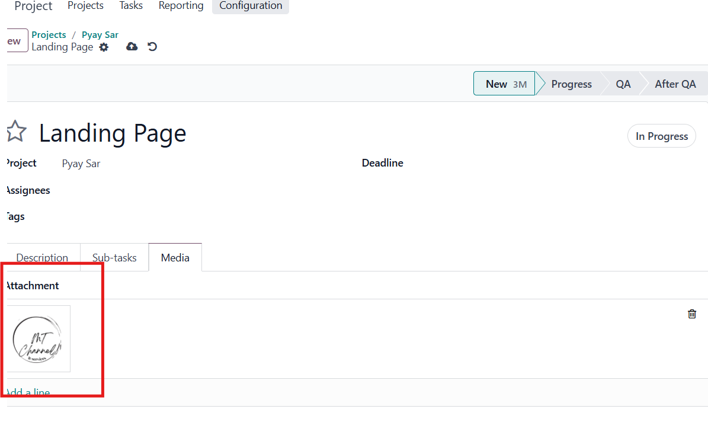

Media For Project
Attach and Manage Media Files in Odoo Projects
The Media For Project module extends Odoo's Project app
by allowing users to upload, preview, and manage images or media files
directly inside project tasks. This helps teams collaborate better
with visual references and project-related media.
✨ Key Features
- Attach images and media to project tasks
- Preview media directly without downloading
- Improved collaboration for media-driven projects
- Seamless integration with the Project app
📌 Usage
- Open any project task
- Upload or attach your image/media file
- Preview media using the built-in widget
🖼️ Screenshots
Upload and Preview Media in Tasks:

Seamless Integration with Project:

👨💻 Author
Developed and maintained by MT Tech.